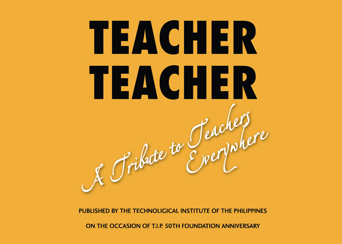

Teacher Teacher, A Tribute to Teachers Everywhere

Eight years ago, the Technological Institute of the Philippines (T.I.P.) published a book entitled Teacher
Teacher as part of its 50th anniversary celebration.
The book gave honor and praise, not just to the teachers who had been with T.I.P. since the beginning, but also
to all the teachers who are working hard to educate
generations and generations of Filipinos, so they too, can have a better future.
T.I.P. founders Engr. Demetrio A. Quirino and Dr. Teresita U. Quirino started out as teachers themselves before
they acted on their vision of doing more for
the Filipino youth by founding an engineering educational institution. Since 1962, T.I.P. has been transforming
students into graduates with full competence in their
fields of studies and who also possess Filipino values, industry-desired values, and global citizen values.
Teachers are the most significant component of any educational institution’s success. The book Teacher Teacher
is T.I.P.’s way of giving thanks and showing appreciation
for its teachers’ tireless efforts to meet the vision of the T.I.P. founders: to make T.I.P. the leading
professional technological institution in the Philippines and to
produce graduates who contribute to the welfare of society.
With the shift to the new normal, T.I.P. understands that it is not just students who are experiencing
challenges but teachers as well. The re-release of the book Teacher Teacher
hopes to bring more inspiration to educators to continue giving their best in educating their students so they
too can also be the best version of themselves.
T.I.P. shares this book with everyone.
Please click on this link to access some essays from the book Teacher Teacher, A Tribute to Teachers Everywhere
-- http://bit.ly/TeacherTeacherSelectedEssays